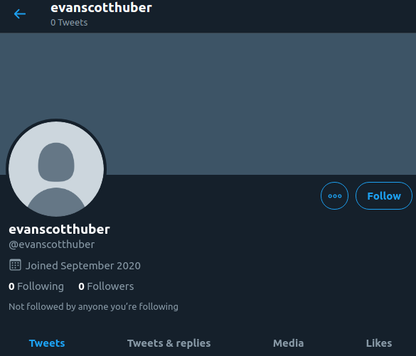
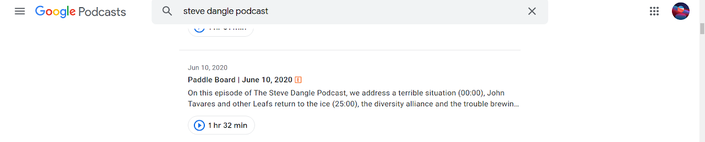
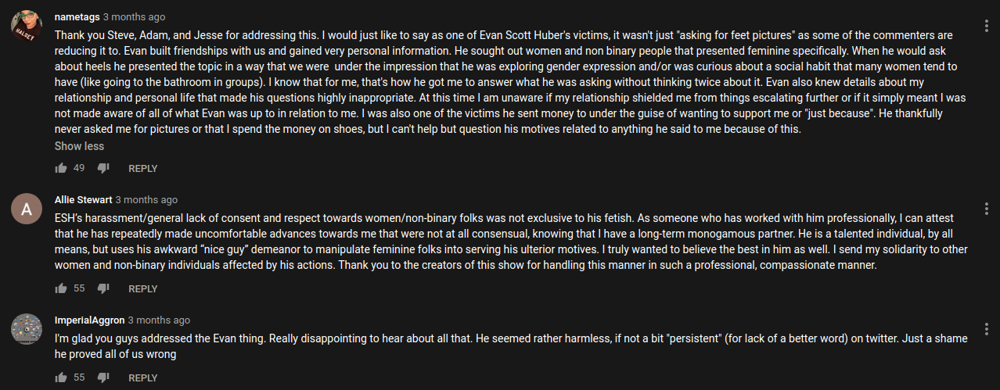
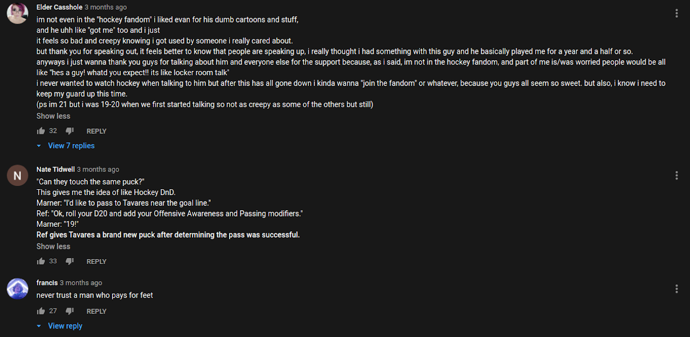
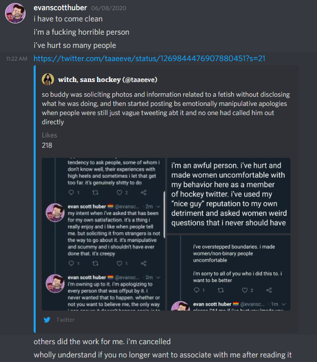

This page was originally just a Google Sites page to host the 'Big McThankies' YouTube video but I ended up getting way off track and went into the video editor's allegations.
Additional comment, I'm glad 13 year old me archived that description because it seems that the reuploader changed it.
Big McThankies
November 7, 2020
Big McThankies
Copyright Disclaimer Under Section 107 of the Copyright Act 1976, allowance is made for "fair use" for purposes such as criticism, comment, news reporting, teaching, scholarship, and research. Fair use is a use permitted by copyright statute that might otherwise be infringing. Non-profit, educational or personal use tips the balance in favor of fair use.
I have never looked into his other projects, Only Big McThankies which was really old, But the WebDev called him out on being a predator to young women and nonbinary hockey fans. This topic was also brought up in The Steve Dangle Podcast
If you click on Contact it doesn't let you mail to him, but the email address is still available on his YouTube About page. His email is evanscotthuber@gmail.com
[This person might not be Evan, or might be]

This topic was brought up in The Steve Dangle Podcast

The podcast is on YouTube, and has comments enabled


His apology on Discord(in an unknown channel/Direct Message/Group Chat

BassBird Uploads a video titles 'I'm back"(It's unlisted and comments and rating are enabled), If you sort from Newest First you can see the people who haven't seen the tweet or anyone evidence saying he's bad. One of the commenters mention BigMcThankies
i'm back
since i'm getting so much attention on this channel, i might as well use it and make more of the kind of content you seem to like. here's a teaser of what i'm working on
This is where I found it, I resized it to 4:3
Big McThankies song [Original, watermark-less, read desc]
A while ago someone who went on YouTube by the name of BisonBurger made a song from famous Jimmy Neutron scenes. This video which rested at THIS LINK has since been privatized and or deleted. Fortunately, I had this resting in my hard drive, so I am able to reupload it.
If the original creator of this video wants me to remove it, I will. However, I want to store this publicly for historical purposes. If you still want me to remove it, you can contact me in Twitter @leemetme or by e-mail to: spam@leemet.me (NO SPACES)
If you're a fan of this video, you should probably download this, as a take down for this video is just as likely as it was for the original. Here is the link for the original, which has now been deleted. https://youtu.be/4vN7EXFMW70
This video has no annoying intro or a Bandicam watermarks, something which the other version I saw lacked.
The song used as background music was `cold fingers by ratatat` (official upload for this song here: https://youtu.be/wXQLVNUAbV4) as per the original description. Looking from the Web Archive, the video had 1,203,644 views and was uploaded on Nov 13, 2017.
The original description also hosted a link to a now defunct Ko-Fi link, which you can still access using the Web Archive. It is clear that the person is trying to for whatever reason scrub their presence of the web. So, out of respect for the creator, I would advise against breaching their privacy.
-- EDIT --
Whoops! After looking into it -- turns out the creator has been deemed a creep of some kind -- the website manager for his website has edited the website to call him out on it and a video on it has been released as well. Content Warning: predatory sexual behavior.
https://evanscotthuber.com/ -- several links here, now also listed down below:
https://youtu.be/x5TjCxUa59Q?t=109 From timestamp 01:49 to 25:00.
https://twitter.com/byulzgalov/status/1269838886378840064
https://twitter.com/ThePivotsXXD/status/1271860511433351169/
https://twitter.com/brittanyyyyy_h/status/1269848759682207745?s=20
https://twitter.com/brittanyyyyy_h/status/1269898331431600128?s=20
I also have no tolerance towards abusers and send my solidarity to those affected by him, as little as my word can mean. But I am keeping this video online, because it's THIS VIDEO where people can now learn WHY this video was deleted and WHAT happened. Also, I'm not going to lie, it's a good video.
What a crazy rollercoaster. I'm too lazy to edit the content before the edit, but this person might want me to censor the description, so you might want to store this as well somehow